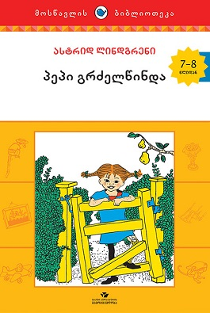
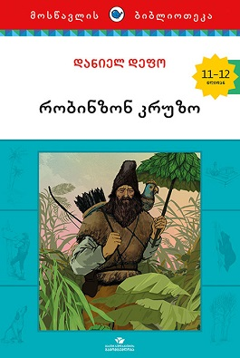
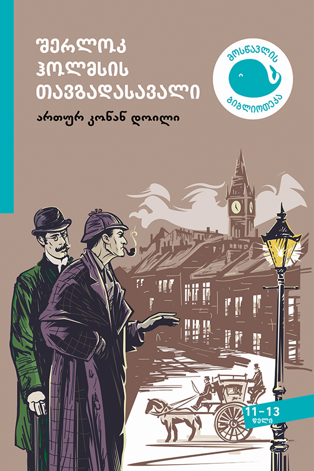
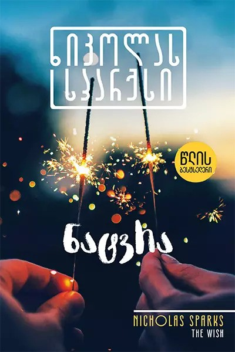
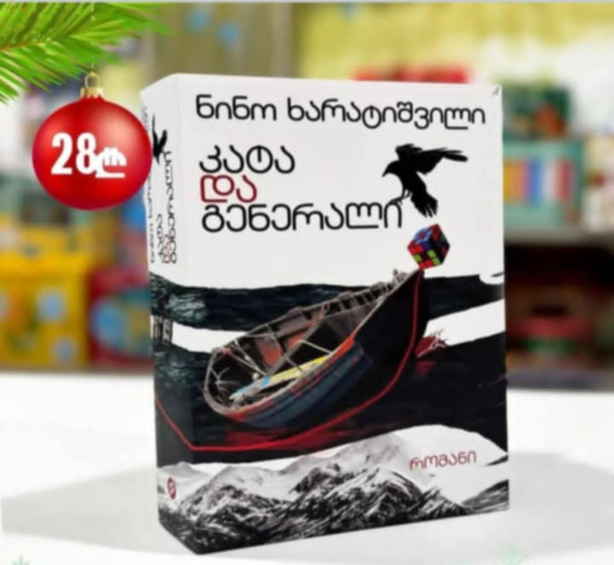

ფასი: 25₾
წიგნი მოიცავს საინტერესო და სახალისო ისტორიებს.

ფასი: 19₾
რომანების სერია ეფუძნება რეალური პიროვნების, ალექსანდრ სელკირკის თავგადასავალს, რომელმაც წყნარი ოკეანის ერთ-ერთ კუნძულზე გაატარა ცხოვრების 28 წელი.

ფასი: 23₾
კონან დოილმა შექმნა მოთხრობების მთელი სერია ცნობილი დეტექტივის შერლოკ ჰოლმზის თავგადასავლების შესახებ. ეს ნაწარმოებები ითვლება დეტექტივური ჟანრის კლასიკად.

ფასი: 18₾
1995 წელი — წელი, რომელმაც 16 წლის გოგონას ცხოვრება შეცვალა; წელი, როცა ერთი მიყრუებული კუნძულის პატარა ქალაქში მთელი ცხოვრების სიყვარული იპოვა — ბიჭი, რომელმაც სამყარო შეაცნობინა და საყვარელი საქმე აპოვნინა

ფასი: 28₾
"რა გგონია, მსოფლიოში ერთი თავისუფალი რუსი მაინც არსებობს? ვინმე, ვისაც ეს ღირსებია? ჩვენ თავისუფლებას დუმილითა და შეუმჩნევლობით მოვიპოვებთ, თუ არადა, სამუშაო ბანაკი ან, უკეთეს შემთხვევაში, ცხრა კვადრატული...
ფასი: 26₾
თანამედროვე ქართველი კლასიკოსი მწერალის გურამ დოჩანაშვილის ყველაზე ცნობილი ნაწარმოები. "სამოსელი პირველის" სიუჟეტი თავგადასავლის მაძიებელი ჭაბუკის დომენიკოს ტიპური ამბავია, რომელზეც დიდად იმოქმედა იდუმალებით მოცული კაცის - ლტოლვილის ნაამბობმა.